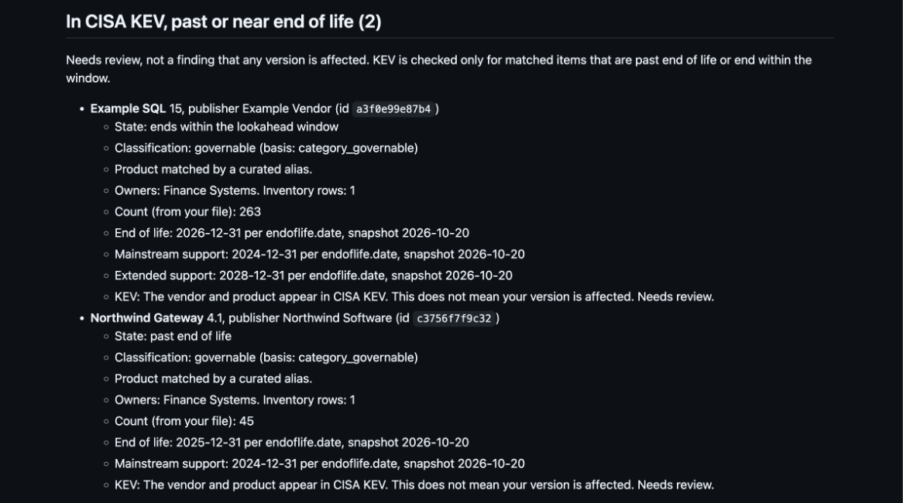

Is this for you, and how to start
Does it fit?
- Teams that have an inventory export but no commercial software catalog.
- Security and platform teams that use
--fail-onas an offline gate. - One-off reviews of an estate.
When not to use it: if you already run Flexera, ServiceNow or Rapid7, you likely have a wider catalog. This tool covers only the products endoflife.date lists. See what it is not.
What you need
- A CSV with a header row. Two columns are required:
nameandversion. - Optional columns: publisher, owner, count, export_eol and parent. The heading export_support is accepted but not used in this version.
- Export dates must be ISO dates (
2026-01-15, optionally with a time). - The tool matches headings after ignoring case, punctuation and spacing, and it never guesses.
- Python 3.9 or newer. There is nothing to install.
The full heading table is in the README. A blank layout is in templates/inventory-template.csv.
Pick how to run it
In a terminal
Run it yourself.
With an AI assistant
Counts-only. The assistant must never read the report.
Desktop chat app server
Optional, advanced. Tested once on one Mac, the rest Unverified. Use the full path to Python.
Before your first run
Run preflight on a new export. It says which columns it found and what to fix, without printing any row. On Windows, use py for python3.
python3 software_lifecycle.py preflight YOUR-INVENTORY.csvSee it in a minute
Run this from the repo root:
python3 software_lifecycle.py check examples/software-inventory.csv --data tests/fixtures/data --as-of 2026-10-24 --golden examples/golden-sources.csv --exceptions examples/exceptions.csv --tracking examples/tracking.csv --support-records examples/support-records.csv --out ../swlc-demoThe tool prints exactly one line:
Wrote report.json, report.md, report.csv to ../swlc-demoThe demo uses made-up data, so the output never changes with the date. Real inventories are confidential: read Confidential inventories before you run your own.
The report is in ../swlc-demo/report.md. Here is what it looks like.


Read the same text
The summary line, then the first KEV item, copied from the sample report.
Items: 50 (rows: 60; inventory rows, not installs). past end of life 8; ends within the lookahead window 5; dates disagree 4; couldn't match 11; in CISA KEV, past or near end of life 2; accepted risk 1; ownerless 1; golden source overrides 1; names to review 1.- **Example SQL** 15, publisher Example Vendor (id `a3f0e99e87b4`)
- State: ends within the lookahead window
- Classification: governable (basis: category_governable)
- Product matched by a curated alias.
- Owners: Finance Systems. Inventory rows: 1
- Count (from your file): 263
- End of life: 2026-12-31 per endoflife.date, snapshot 2026-10-20
- Mainstream support: 2024-12-31 per endoflife.date, snapshot 2026-10-20
- Extended support: 2028-12-31 per endoflife.date, snapshot 2026-10-20
- KEV: The vendor and product appear in CISA KEV. This does not mean your version is affected. Needs review.Read the full sample report on GitHub, or see How to read a report.
If you run the demo inventory against the bundled data, every item lists as "couldn't match", because the demo names are made up. A sample of the output is at examples/sample-report.md.
Exporting from your platform
For Flexera, ServiceNow and Rapid7, see the platform guide. All three profiles are Unverified: no one has run them on a real export yet.
Product not matched?
Open the Product the tool could not match issue form on GitHub. Give the public product name, the publisher and the version format. Names only.
Terms in plain language
Open a term to read it. KEV and SBOM have their own pages: What is KEV? and What is an SBOM?
What is end of life?
End of life (EOL) is the date after which a vendor or project stops publishing fixes for a version. Software past that date gets no more security updates from its maker. Some vendors sell extended support beyond it. A support record you hold for that is shown beside the vendor's dates but never changes a state, a list or --fail-on.
What is a cycle?
A cycle is one release line of a product that has its own end-of-life date, for example Python 3.12 or Ubuntu 22.04. The tool matches a name and version to a product and a cycle. If it cannot decide on a cycle, it claims no date and the item lands in "couldn't match".
What is a CVE?
A CVE is a public ID for one specific software flaw, such as CVE-2021-44228. KEV entries are CVEs. This tool does not look up CVEs or score their severity. It is not a scanner.
What is endoflife.date?
endoflife.date is a public website, with MIT-licensed product files, that lists end-of-life dates by product and cycle. The tool's dates come from it unless a golden-sources file overrides them. See How often is the data updated?
What is an item ID?
An item ID is a 12-character hash of publisher, name and version. It keeps names out of counts and findings, but it does not hide an item from someone who can guess it. Treat item IDs with the same care as the inventory. See item IDs.
What is counts-only mode?
--counts-only makes the tool print only counts, item IDs, the checked-on date and the kev_current flag. The full report goes to a file. It is meant for running the tool through an AI assistant. The assistant can still read that file, so tell it not to. See Privacy.
After a run, read How to read a report. For data age, see How often is the data updated? For the KEV flag, see What is KEV?